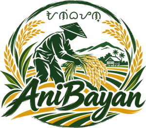
The local harvest, connected.
Fresh from the land.Closer to home.
Meet the farming communities behind your everyday food.
Shop fresh crops, directly from local growers.
Rooted in our
farming communities.
From the land to your table
Every harvest
has a story.
Good people. Fresh crops. A place to call home.
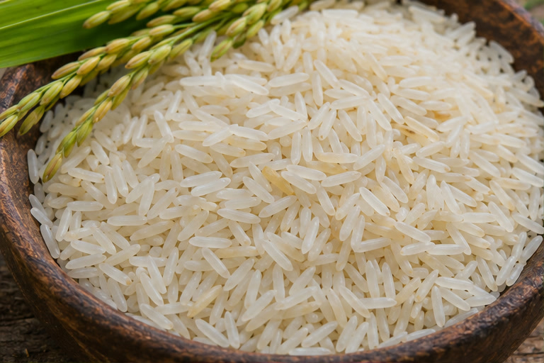
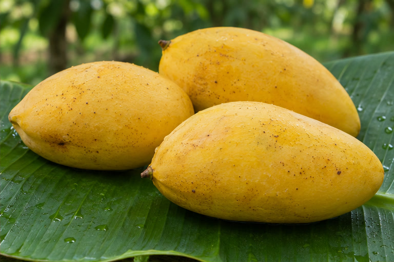
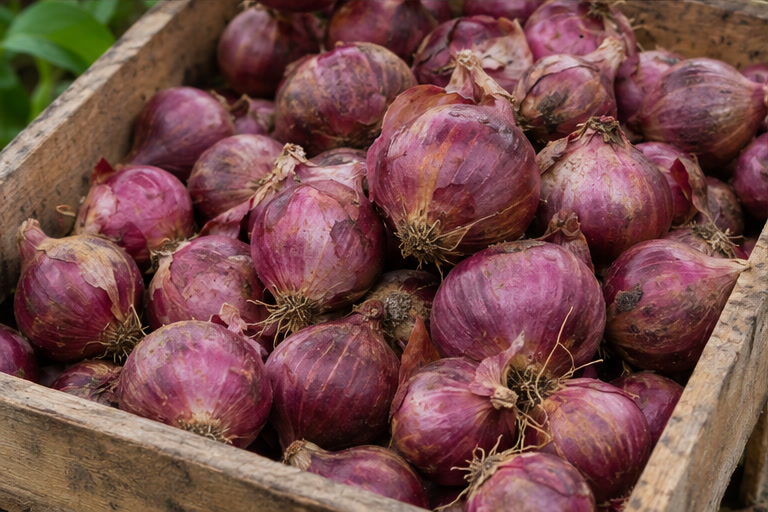
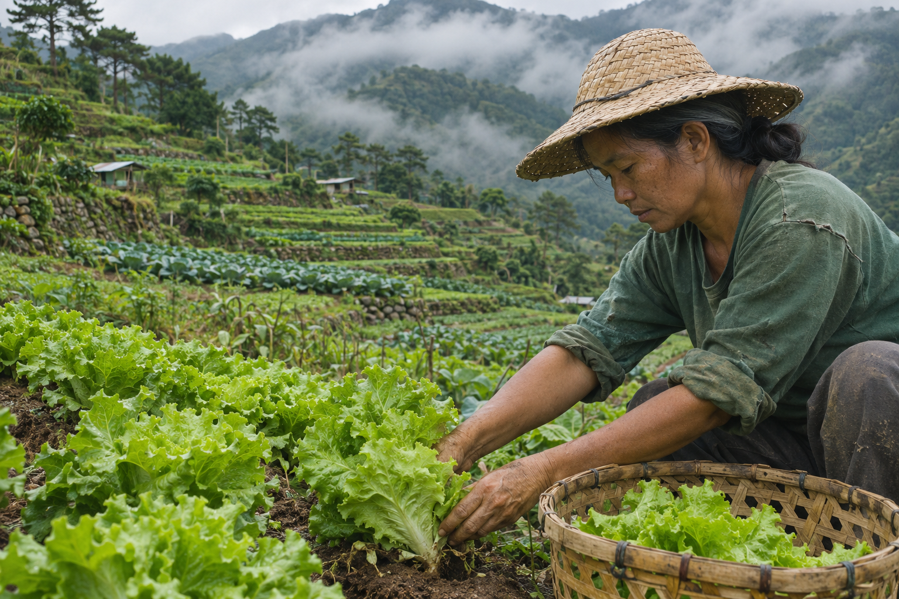
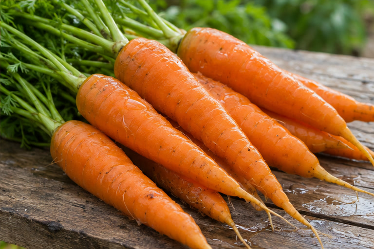
This is AniBayan
Good food.
Good roots.
Closer connections.
There’s a whole community behind every harvest.
Get to know the people, the places, and the care
that bring good food to your table.
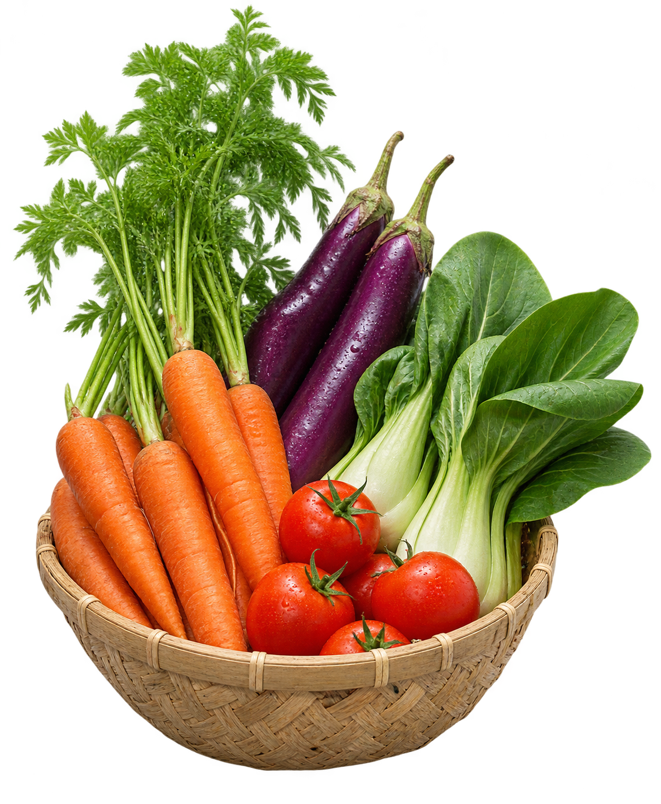
Grown with care. Shared with you.A harvest worth getting to know
Good things grow here.
Discover familiar favorites.
Find the stories behind them.
Rice & grains
From our lowlandsSun-ripened fruits
A little island sunshineGarden vegetables
Picked in CanubingMeet our growers.
Explore the communities
Know where
it begins.
Discover the places Everyday favorites
Rooted in local soilExplore the
marketplace.
Find your next local harvest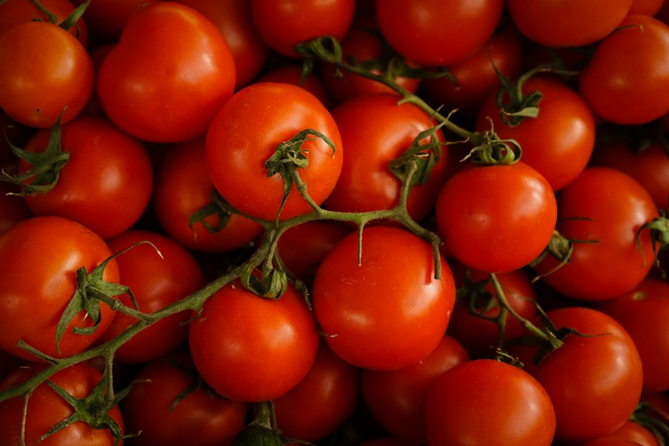
Vine-ripened tomatoes
A brighter everydayGolden bananas
Naturally sun-ripened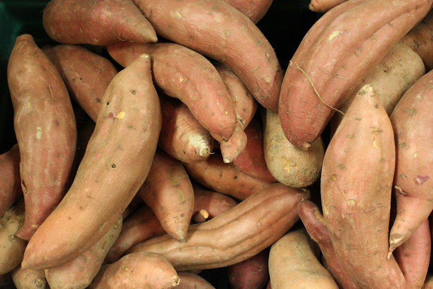
Sweet potatoes
Goodness from the ground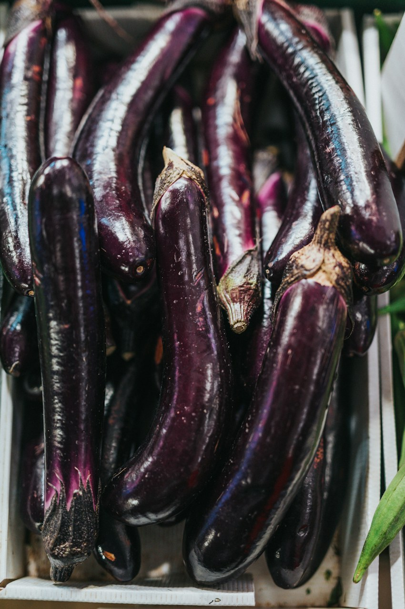
Purple eggplants
From local gardensRooted in Calapan City
Many barangays.
One growing community.
Get to know the communities behind the crops.
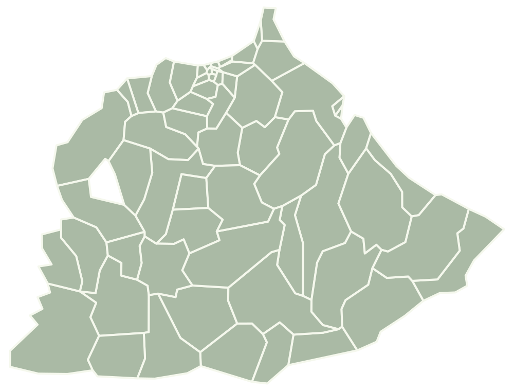
The care behind every crop
Small beginnings.
A whole lot of care.
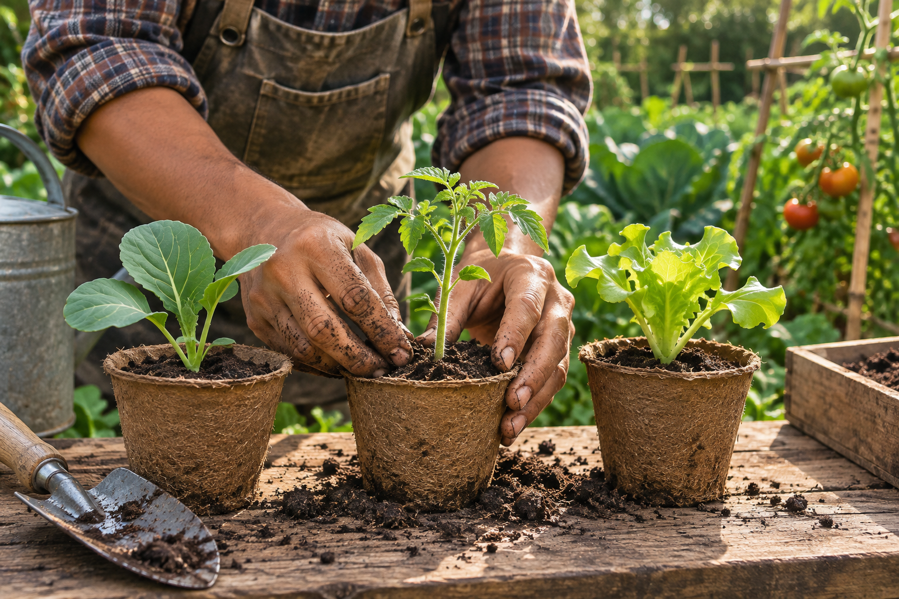
Before a harvest reaches your home, it starts with someone tending the soil, nurturing a seedling, and showing up each day.
A closer connection, made simple
From a local harvest
to your everyday.
- 01
Explore the marketplace
Browse crops and compare what each organization has available.
- 02
Get to know your grower
See the organization and the place behind the harvest.
- 03
Order from the source
Review your order with each organization, then follow its progress.
there’s a growing community.
Grow with AniBayan
Have a harvest to share?
Give your growing community a place to tell its story.